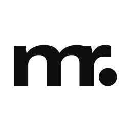
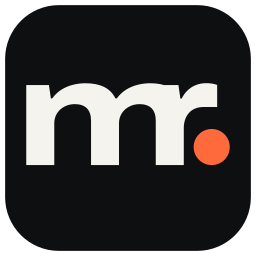

Pro malé firmy z Plzně a okolí je Michal Roučka vývojář, který jim postaví web i aplikaci na míru –
srozumitelně, osobně a se spolehlivostí, jakou čekají od profesionála.
Stacked lockup – čtvercové formáty, vizitka, sociální sítě.

Jednobarevný negativ

Jednobarevný pozitiv

Favicon 64 / 32 / 16 px
Profilový obrázek
Barvy
Ink#0E0F11 Pozadí tmavého tématu, text světlého (17,3 : 1 na Paper)
Graphite#1B1D21 Plochy, karty a sekce na tmavém pozadí
Paper#F5F3EE Pozadí světlého tématu, text tmavého (15,2 : 1 na Graphite)
Signal#FF6A3D Akcent: tečka v logu, CTA, odkazy na tmavém (6,7 : 1 na Ink)
Ash#A09F99 Vedlejší text na tmavém (7,2 : 1 na Ink)
Ash Deep#64635E Vedlejší text na světlém (5,4 : 1 na Paper)
Signal Deep#C2410C Akcent ve světlém tématu (4,7 : 1 na Paper)
Ash Deep a Signal Deep jsou
světlé protějšky Ash a Signal – stejná role, jen upravený tón kvůli kontrastu.
Typografie – jedna rodina, dvě šířky
Weby, které pracují za vás
Archivo Expanded (šířka 125) na nadpisy, Archivo (šířka 100) na text.
Jeden variabilní soubor písma s osami šířky a váhy, licence SIL Open Font License, plná podpora češtiny.
H1 · 61 pxAa Čč
H2 · 39 pxJak spolupráce probíhá
H3 · 25 pxPrezentační web
Text · 16–18 pxNavrhnu, postavím a spustím web, který vám přivede zákazníky.
Malý · 13 pxOdesláním souhlasíte se zpracováním osobních údajů.